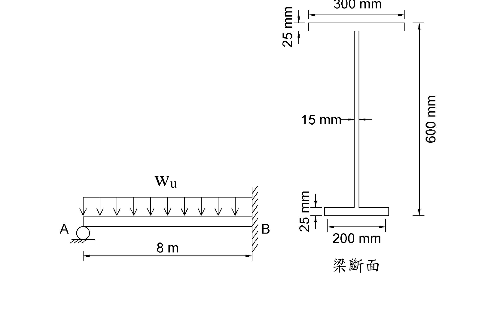

<!DOCTYPE html>
<html lang="zh-Hant">
<head>
<meta charset="UTF-8">
<meta name="viewport" content="width=device-width, initial-scale=1.0">
<title>SS-2020-2 — 題目解析</title>
<link rel="stylesheet" href="../assets/katex/katex.min.css">
<script defer src="../assets/katex/katex.min.js"></script>
<script defer src="../assets/katex/auto-render.min.js"
  onload="renderMathInElement(document.body,{delimiters:[{left:'$$',right:'$$',display:true},{left:'$',right:'$',display:false},{left:'\\(',right:'\\)',display:false}],throwOnError:false});"></script>
<style>
:root{
  --ac:#1565c0; --ac2:#e3f2fd; --bg:#f7f9fb; --card:#fff; --ink:#263238; --mut:#607d8b; --bd:#dfe6ea;
}
*{box-sizing:border-box}
body{margin:0;font-family:"Microsoft JhengHei","Noto Sans TC",-apple-system,sans-serif;
  background:var(--bg);color:var(--ink);line-height:1.75;font-size:15.5px}
header{background:linear-gradient(135deg,#0d47a1,#1976d2 60%,#42a5f5);color:#fff;padding:22px 26px}
header h1{margin:0;font-size:1.15em;letter-spacing:.3px}
header .lect{display:inline-block;margin-top:10px;margin-left:8px;font-size:.82em;color:#4a148c;background:#f3e5f5;border:1px solid #ce93d8;padding:5px 14px;border-radius:16px;text-decoration:none}header .lect:hover{background:#fff;color:#4a148c}header .quick{display:inline-block;margin-top:10px;font-size:.82em;color:#0d47a1;background:#e3f2fd;border:1px solid #90caf9;padding:5px 14px;border-radius:16px;text-decoration:none}header .quick:hover{background:#fff;color:#0d47a1}header .back{display:inline-block;margin-top:10px;font-size:.82em;color:#fff;background:rgba(255,255,255,.18);
  padding:4px 12px;border-radius:14px;text-decoration:none}
header .back:hover{background:rgba(255,255,255,.32)}
main{max-width:880px;margin:0 auto;padding:26px 22px 70px}
h1,h2,h3{color:#0d47a1}
h2{font-size:1.2em;border-left:6px solid var(--ac);padding-left:12px;margin:34px 0 14px}
h3{font-size:1.05em;margin:22px 0 8px}
p{margin:9px 0}
hr{border:none;border-top:1px solid var(--bd);margin:22px 0}
table{width:100%;border-collapse:collapse;margin:14px 0;font-size:.92em;background:#fff}
th,td{border:1px solid var(--bd);padding:7px 10px;text-align:left;vertical-align:top}
th{background:#eceff1;font-weight:600}
tbody tr:nth-child(even){background:#fafcfd}
code{background:#eceff1;padding:1px 5px;border-radius:4px;font-size:.92em}
img{max-width:100%;display:block;margin:14px auto;border:1px solid var(--bd);border-radius:8px}
em{color:var(--mut)}
strong{color:#1b2a33}
.katex-display{margin:12px 0!important;overflow-x:auto;overflow-y:hidden}
footer{text-align:center;color:var(--mut);font-size:.8em;padding:22px;border-top:1px solid var(--bd)}
</style>
</head>
<body>
<header>
  <h1>SS-2020-2 題目解析</h1>
  <a class="quick" href="../study-SS-U1-2.html" title="SS-U1-2 梁桿件 命題分析（速查頁）（副分類）">&#128269; U1-2 速查頁（副分類）</a><a class="lect" href="../lecture-SS-U1-2.html" title="SS-U1-2 梁桿件 觀念講義（副分類）">&#128218; U1-2 梁桿件 講義（副分類）</a>
</header>
<main>
<h1>考題編號：SS-2020-2</h1>
<p><strong>主分類：</strong> <code>SS-U2-1</code> 塑性分析與設計<br />
<strong>副分類：</strong> <code>SS-U1-2</code> 梁桿件<br />
<strong>設計法：</strong> 塑性分析<br />
<strong>標籤：</strong> <code>塑性分析</code> <code>塑性鉸</code> <code>虛功法</code> <code>一端固定一端滾支</code> <code>懸臂梁</code> <code>均佈載重</code> <code>極限載重</code> <code>非對稱H型鋼</code> <code>塑性斷面模數</code> <code>中性軸</code> <code>半面積法</code></p>
<hr />
<h2>1. 原始題目重述 (Problem Restatement)</h2>
<p>下圖所示為一承受均佈載重 $w_u$ 之鋼梁桿件，兩端分別為滾支承（A 端）及固定端（B 端），梁斷面如圖所示（非對稱 H 型鋼），假設鋼梁有充分之側向支撐，且斷面為結實斷面，材料強度 $F_y = 2.5$ tf/cm²，試依塑性分析，求此鋼梁可承受之極限均佈載重 $w_u$。（25 分）</p>
<p><strong>梁斷面（非對稱 H 型鋼）：</strong></p>
<ul>
<li>上翼板：寬 300 mm（30 cm），厚 25 mm（2.5 cm）</li>
<li>腹板：厚 15 mm（1.5 cm），高 550 mm（55 cm）</li>
<li>下翼板：寬 200 mm（20 cm），厚 25 mm（2.5 cm）</li>
<li>總高：300 + 550 + 250 mm → 600 mm（60 cm）（兩翼板各25mm + 腹板550mm）</li>
</ul>
<p><strong>結構型式：</strong> 跨度 $L = 8$ m = 800 cm，A 端滾支承，B 端固定端，全跨均佈載重 $w_u$（tf/cm）</p>
<p></p>
<p><em>圖說：左圖為梁斷面（正視圖），上翼板寬 30 cm、厚 2.5 cm，腹板高 55 cm、厚 1.5 cm，下翼板寬 20 cm、厚 2.5 cm，總高 60 cm。右圖為結構示意，A 端為滾支承（下方），B 端為固定端（右方），跨度 L=8m=800cm，$w_u$ 為均向下作用之均佈載重。</em></p>
<hr />
<h2>2. 考題核心精神與出題者意圖 (Core Concepts &amp; Examiner's Intent)</h2>
<p><strong>核心觀念：塑性機構法（虛功法）+ 非對稱斷面之塑性斷面模數計算</strong></p>
<p>本題測驗兩個環節：</p>
<ol>
<li>
<p><strong>計算非對稱 H 型鋼的塑性斷面模數 $Z_x$</strong><br />
   - 等面積中性軸（PNA）不在幾何中心，需用「半面積法」求 PNA 位置<br />
   - PNA 將斷面分為上下等面積，$Z_x = $ 上半面積對 PNA 之一次矩 + 下半面積對 PNA 之一次矩</p>
</li>
<li>
<p><strong>計算一端固定一端滾支梁（propped cantilever）承受 UDL 之極限載重</strong><br />
   - 靜定度 = 1（一次靜不定），需形成 <strong>2 個</strong> 塑性鉸才能成為機構<br />
   - 最佳機構：固定端 B 形成第一個鉸（$M = M_p$），跨內距 A 端 $x = L(\sqrt{2}-1)$ 處形成第二個鉸</p>
</li>
</ol>
<p><strong>出題者測驗重點：</strong></p>
<ul>
<li>等面積中性軸定位（半面積法）</li>
<li>$Z_x$ 的積分計算（上下兩部分各自對 PNA 求一次矩）</li>
<li>虛功法建立方程式，並對 $x$ 求最小 $w_u$（或最大機構條件）</li>
</ul>
<hr />
<h2>3. 解題戰略地圖與陷阱分析 (Strategic Roadmap &amp; Trap Analysis)</h2>
<p><strong>步驟規劃：</strong></p>
<ol>
<li>計算各部位面積，求總面積 $A_g$</li>
<li>以半面積法找塑性中性軸（PNA）位置</li>
<li>計算塑性斷面模數 $Z_x$（上下分區求一次矩後相加）</li>
<li>計算塑性彎矩 $M_p = F_y \cdot Z_x$</li>
<li>用虛功法（機構法）推導 $w_u$ 的公式</li>
<li>對機構最優位置求最小 $w_u$（或直接用一次靜不定分析結果）</li>
</ol>
<p><strong>關鍵陷阱：</strong></p>
<blockquote>
<p>⚠️ <strong>陷阱1：誤將幾何中心當塑性中性軸</strong><br />
本題斷面非對稱，上翼板（30cm×2.5cm=75cm²）≠ 下翼板（20cm×2.5cm=50cm²），幾何中心 ≠ 等面積中性軸。必須用半面積法求 PNA 位置。</p>
<p>⚠️ <strong>陷阱2：混淆塑性斷面模數 Zx 與彈性斷面模數 Sx</strong><br />
塑性分析用 $M_p = F_y Z_x$，$Z_x$ ≠ $S_x$（彈性斷面模數）。</p>
<p>⚠️ <strong>陷阱3：遺忘腹板貢獻</strong><br />
計算 $Z_x$ 時，腹板上下兩半各自對 PNA 有不小的貢獻，不可只計算翼板。</p>
<p>⚠️ <strong>陷阱4：虛功法的角度計算</strong><br />
兩段梁的轉角與 $\delta$（虛位移）的關係：$\theta_1 = \delta/x$（A端到鉸），$\theta_2 = \delta/(L-x)$（鉸到B端），總轉角要正確。</p>
</blockquote>
<h2>3.5 變數層次分析（Variable Hierarchy Analysis）</h2>
<blockquote>
<p>複習提示：解題後，在每個卡住的知識點「卡關?」欄標記 <code>⚠</code>；第二次複習時只看有 <code>⚠</code> 的項目。</p>
</blockquote>
<p><strong>最終目標：</strong> 以半面積法求非對稱 H 型鋼之 $Z_x$ → 計算 $M_p$ → 虛功法對最優機構位置求極限均佈載重 $w_u$</p>
<h3>主要公式（$\boxed{\phantom{x}}$ = 未知，待推導）</h3>
<p><strong>Step 1：等面積中性軸（PNA）</strong><br />
$$\frac{A_g}{2} = 103.75 \text{ cm}^2, \quad \boxed{d_{PNA}} = \frac{A_g/2 - A_{\text{上翼板}}}{t_w}$$</p>
<p><strong>Step 2：塑性斷面模數</strong><br />
$$\boxed{Z_x} = \sum A_i |\bar{y}_i - y_{PNA}|$$</p>
<p><strong>Step 3：塑性彎矩</strong><br />
$$\boxed{M_p} = F_y \cdot \boxed{Z_x}$$</p>
<p><strong>Step 4：虛功法（最優機構）</strong><br />
$$\boxed{x} = L(\sqrt{2}-1), \quad \boxed{w_u} = \frac{2(1+\sqrt{2})^2 M_p}{L^2}$$</p>
<h3>L1：題目直接給定</h3>
<table>
<thead>
<tr>
<th>符號</th>
<th>數值</th>
<th>說明</th>
</tr>
</thead>
<tbody>
<tr>
<td>上翼板</td>
<td>30cm × 2.5cm</td>
<td>寬 300mm，厚 25mm</td>
</tr>
<tr>
<td>腹板</td>
<td>1.5cm × 55cm</td>
<td>厚 15mm，高 550mm</td>
</tr>
<tr>
<td>下翼板</td>
<td>20cm × 2.5cm</td>
<td>寬 200mm，厚 25mm</td>
</tr>
<tr>
<td>總高</td>
<td>60 cm</td>
<td>兩翼板各 2.5cm + 腹板 55cm</td>
</tr>
<tr>
<td>$L$</td>
<td>8 m = 800 cm</td>
<td>梁跨距</td>
</tr>
<tr>
<td>支承條件</td>
<td>A 端滾支、B 端固定</td>
<td>一次靜不定，需 2 個塑性鉸</td>
</tr>
<tr>
<td>$F_y$</td>
<td>2.5 tf/cm²</td>
<td>降伏應力</td>
</tr>
</tbody>
</table>
<h3>L2：需知識點推導</h3>
<p><strong>Step 1：斷面面積</strong></p>
<table>
<thead>
<tr>
<th>符號</th>
<th>公式 / 來源</th>
<th style="text-align: center;">卡關?</th>
</tr>
</thead>
<tbody>
<tr>
<td>$A_1$（上翼板）</td>
<td>$30 	imes 2.5 = 75$ cm²</td>
<td style="text-align: center;"></td>
</tr>
<tr>
<td>$A_2$（腹板）</td>
<td>$1.5 	imes 55 = 82.5$ cm²</td>
<td style="text-align: center;"></td>
</tr>
<tr>
<td>$A_3$（下翼板）</td>
<td>$20 	imes 2.5 = 50$ cm²</td>
<td style="text-align: center;"></td>
</tr>
<tr>
<td>$A_g$</td>
<td>$75 + 82.5 + 50 = 207.5$ cm²</td>
<td style="text-align: center;"></td>
</tr>
</tbody>
</table>
<p><strong>Step 2：PNA 位置（半面積法）</strong></p>
<table>
<thead>
<tr>
<th>符號</th>
<th>公式 / 來源</th>
<th style="text-align: center;">卡關?</th>
</tr>
</thead>
<tbody>
<tr>
<td>半面積</td>
<td>$207.5/2 = 103.75$ cm²</td>
<td style="text-align: center;"></td>
</tr>
<tr>
<td>PNA 在腹板</td>
<td>上翼板 75 cm² &lt; 103.75 → PNA 落在腹板中</td>
<td style="text-align: center;"></td>
</tr>
<tr>
<td>$d_{PNA}$</td>
<td>$(103.75 - 75)/1.5 = 19.17$ cm（距上翼板底面）</td>
<td style="text-align: center;"></td>
</tr>
<tr>
<td>$ar{y}_{PNA}$</td>
<td>$2.5 + 19.17 = 21.67$ cm（距頂面）</td>
<td style="text-align: center;"></td>
</tr>
</tbody>
</table>
<p><strong>Step 3：塑性斷面模數 $Z_x$</strong></p>
<table>
<thead>
<tr>
<th>符號</th>
<th>公式 / 來源</th>
<th style="text-align: center;">卡關?</th>
</tr>
</thead>
<tbody>
<tr>
<td>$Z_1$（上翼板）</td>
<td>$75 	imes (21.67 - 1.25) = 1{,}531.5$ cm³</td>
<td style="text-align: center;"></td>
</tr>
<tr>
<td>$Z_2$（腹板上半）</td>
<td>$28.755 	imes (19.17/2) = 275.7$ cm³</td>
<td style="text-align: center;"></td>
</tr>
<tr>
<td>$Z_3$（腹板下半）</td>
<td>$53.745 	imes (35.83/2) = 962.9$ cm³</td>
<td style="text-align: center;"></td>
</tr>
<tr>
<td>$Z_4$（下翼板）</td>
<td>$50 	imes (58.75 - 21.67) = 1{,}854.0$ cm³</td>
<td style="text-align: center;"></td>
</tr>
<tr>
<td>$Z_x$</td>
<td>$1531.5 + 275.7 + 962.9 + 1854.0 = 4{,}624$ cm³</td>
<td style="text-align: center;"></td>
</tr>
<tr>
<td>$M_p$</td>
<td>$2.5 	imes 4624 = 11{,}560$ tf·cm</td>
<td style="text-align: center;"></td>
</tr>
</tbody>
</table>
<p><strong>Step 4：虛功法求極限載重</strong></p>
<table>
<thead>
<tr>
<th>符號</th>
<th>公式 / 來源</th>
<th style="text-align: center;">卡關?</th>
</tr>
</thead>
<tbody>
<tr>
<td>機構形式</td>
<td>固定端 B 一鉸 + 跨內距 A 端 $x$ 處一鉸（共 2 鉸）</td>
<td style="text-align: center;"></td>
</tr>
<tr>
<td>$W_{ext}$</td>
<td>$w_u \cdot L/2$（均布載重虛功）</td>
<td style="text-align: center;"></td>
</tr>
<tr>
<td>$W_{int}$</td>
<td>$M_p(1/x + 2/(L-x))$（兩鉸耗散能量）</td>
<td style="text-align: center;"></td>
</tr>
<tr>
<td>最優 $x$</td>
<td>$L(\sqrt{2}-1) = 331.4$ cm（微分取最小）</td>
<td style="text-align: center;"></td>
</tr>
<tr>
<td>$w_u$</td>
<td>$2(3+2\sqrt{2}) M_p / L^2 = 0.2106$ tf/cm = 21.1 tf/m</td>
<td style="text-align: center;"></td>
</tr>
</tbody>
</table>
<h3>L3：深層知識（不懂就卡住）</h3>
<table>
<thead>
<tr>
<th>知識點</th>
<th>說明</th>
<th style="text-align: center;">補強頁</th>
<th style="text-align: center;">卡關?</th>
</tr>
</thead>
<tbody>
<tr>
<td>等面積中性軸（PNA）≠ 幾何形心</td>
<td>彈性中性軸 = 形心（ENA）；塑性中性軸 = 等面積點（PNA）；非對稱斷面兩者不重合</td>
<td style="text-align: center;"><span style="background:#e3f2fd;color:#1565c0;border-radius:8px;padding:1px 7px;font-size:.88em;font-weight:600">plastic-zx</span></td>
<td style="text-align: center;"></td>
</tr>
<tr>
<td>半面積法求 PNA</td>
<td>從斷面頂部累積面積，超過 $A_g/2$ 的位置即為 PNA</td>
<td style="text-align: center;"><span style="background:#e3f2fd;color:#1565c0;border-radius:8px;padding:1px 7px;font-size:.88em;font-weight:600">plastic-zx</span></td>
<td style="text-align: center;"></td>
</tr>
<tr>
<td>$Z_x$ 計算含腹板貢獻</td>
<td>腹板上下各半各自對 PNA 求靜矩；忽略腹板將低估 $Z_x$</td>
<td style="text-align: center;"><span style="background:#e3f2fd;color:#1565c0;border-radius:8px;padding:1px 7px;font-size:.88em;font-weight:600">plastic-zx</span></td>
<td style="text-align: center;"></td>
</tr>
<tr>
<td>一端固定需 2 個塑性鉸</td>
<td>靜不定度 = 1，需 1+1 = 2 個鉸形成機構；固定端 B 必然先形成第一鉸</td>
<td style="text-align: center;"><span style="background:#e3f2fd;color:#1565c0;border-radius:8px;padding:1px 7px;font-size:.88em;font-weight:600">plastic-mechanism</span> · <span style="background:#e3f2fd;color:#1565c0;border-radius:8px;padding:1px 7px;font-size:.88em;font-weight:600">PLASTIC-HINGE</span></td>
<td style="text-align: center;"></td>
</tr>
<tr>
<td>虛功法中對 $x$ 求最小 $w_u$</td>
<td>上界定理需找最危險（最小 $w_u$）機構；令 $dw_u/dx = 0$，解得 $x = L(\sqrt{2}-1)$</td>
<td style="text-align: center;"><span style="background:#e3f2fd;color:#1565c0;border-radius:8px;padding:1px 7px;font-size:.88em;font-weight:600">plastic-mechanism</span></td>
<td style="text-align: center;"></td>
</tr>
</tbody>
</table>
<hr />
<h2>4. 步驟化詳細計算過程 (Step-by-Step Detailed Calculation)</h2>
<h3>Step 1：斷面幾何與面積計算</h3>
<table>
<thead>
<tr>
<th>部位</th>
<th>尺寸</th>
<th>面積</th>
<th>形心位置（距頂面）</th>
</tr>
</thead>
<tbody>
<tr>
<td>上翼板</td>
<td>$30 \times 2.5$ cm</td>
<td>$A_1 = 75$ cm²</td>
<td>$y_1 = 1.25$ cm</td>
</tr>
<tr>
<td>腹板</td>
<td>$1.5 \times 55$ cm</td>
<td>$A_2 = 82.5$ cm²</td>
<td>$y_2 = 2.5 + 27.5 = 30$ cm</td>
</tr>
<tr>
<td>下翼板</td>
<td>$20 \times 2.5$ cm</td>
<td>$A_3 = 50$ cm²</td>
<td>$y_3 = 2.5 + 55 + 1.25 = 58.75$ cm</td>
</tr>
</tbody>
</table>
<p>$$A_g = 75 + 82.5 + 50 = 207.5 \text{ cm}^2$$</p>
<hr />
<h3>Step 2：求等面積中性軸（PNA）位置</h3>
<p>$$\frac{A_g}{2} = \frac{207.5}{2} = 103.75 \text{ cm}^2$$</p>
<p><strong>從頂面往下累積面積：</strong></p>
<ul>
<li>上翼板全部：$75$ cm² $< 103.75$ cm²（PNA 在翼板以下）</li>
<li>剩餘面積：$103.75 - 75 = 28.75$ cm²，需在腹板中取得</li>
</ul>
<p>設 PNA 距上翼板底面（腹板頂部）往下 $d$ cm：</p>
<p>$$d = \frac{28.75}{t_w} = \frac{28.75}{1.5} = 19.17 \text{ cm}$$</p>
<p><strong>PNA 距頂面距離：</strong><br />
$$\bar{y}_{PNA} = 2.5 + 19.17 = 21.67 \text{ cm}$$</p>
<p>驗證：PNA 以下面積 = 腹板下半 $(55-19.17) \times 1.5 + 50 = 35.83 \times 1.5 + 50 = 53.75 + 50 = 103.75$ cm² ✓</p>
<hr />
<h3>Step 3：計算塑性斷面模數 $Z_x$</h3>
<p>$Z_x = $ 各部分面積對 PNA 之靜矩絕對值之和</p>
<p><strong>上半部分（PNA 以上，對 PNA 取矩）：</strong></p>
<p>① 上翼板：<br />
$$Z_1 = A_1 \times (\bar{y}_{PNA} - y_1) = 75 \times (21.67 - 1.25) = 75 \times 20.42 = 1{,}531.5 \text{ cm}^3$$</p>
<p>② 腹板上半（腹板頂部至 PNA，高度 $d = 19.17$ cm）：<br />
$$Z_2 = (1.5 \times 19.17) \times \frac{19.17}{2} = 28.755 \times 9.585 = 275.7 \text{ cm}^3$$</p>
<p><strong>下半部分（PNA 以下，對 PNA 取矩）：</strong></p>
<p>③ 腹板下半（高度 $55 - 19.17 = 35.83$ cm）：<br />
$$Z_3 = (1.5 \times 35.83) \times \frac{35.83}{2} = 53.745 \times 17.915 = 962.9 \text{ cm}^3$$</p>
<p>④ 下翼板：<br />
$$Z_4 = A_3 \times (y_3 - \bar{y}_{PNA}) = 50 \times (58.75 - 21.67) = 50 \times 37.08 = 1{,}854.0 \text{ cm}^3$$</p>
<p><strong>塑性斷面模數：</strong><br />
$$Z_x = Z_1 + Z_2 + Z_3 + Z_4 = 1531.5 + 275.7 + 962.9 + 1854.0 = \mathbf{4{,}624.1 \text{ cm}^3}$$</p>
<hr />
<h3>Step 4：計算塑性彎矩 $M_p$</h3>
<p>$$M_p = F_y \cdot Z_x = 2.5 \times 4{,}624.1 = \mathbf{11{,}560 \text{ tf·cm}}$$</p>
<hr />
<h3>Step 5：虛功法推導極限均佈載重 $w_u$</h3>
<p><strong>機構分析（一次靜不定，需 2 個塑性鉸）：</strong></p>
<p>設內部塑性鉸距 A 端（滾支承）之距離為 $x$，另一個鉸在固定端 B。</p>
<p><strong>虛位移法：</strong> 令內部鉸處之虛位移 $\delta = 1$</p>
<p>各段轉角：<br />
$$\theta_1 = \frac{\delta}{x} = \frac{1}{x} \quad \text{（A 至內部鉸，繞 A 旋轉）}$$<br />
$$\theta_2 = \frac{\delta}{L-x} = \frac{1}{L-x} \quad \text{（內部鉸至 B，繞 B 旋轉）}$$</p>
<p><strong>外虛功（均佈載重 $w_u$ 在兩段梁上）：</strong></p>
<p>$$W_{ext} = w_u \times \left(\frac{1}{2} \cdot x \cdot 1\right) + w_u \times \left(\frac{1}{2} \cdot (L-x) \cdot 1\right) = w_u \times \frac{L}{2}$$</p>
<p><strong>內虛功（兩個塑性鉸各自耗散能量）：</strong></p>
<ul>
<li>內部鉸（兩段轉角之和）：$M_p(\theta_1 + \theta_2) = M_p\!\left(\dfrac{1}{x} + \dfrac{1}{L-x}\right)$</li>
<li>固定端 B 的鉸：$M_p \cdot \theta_2 = \dfrac{M_p}{L-x}$</li>
</ul>
<p>$$W_{int} = M_p\!\left(\frac{1}{x} + \frac{1}{L-x}\right) + \frac{M_p}{L-x} = M_p\!\left(\frac{1}{x} + \frac{2}{L-x}\right)$$</p>
<p><strong>能量平衡 $W_{ext} = W_{int}$：</strong></p>
<p>$$w_u \cdot \frac{L}{2} = M_p\!\left(\frac{1}{x} + \frac{2}{L-x}\right)$$</p>
<p>$$\boxed{w_u = \frac{2M_p}{L} \cdot \left(\frac{1}{x} + \frac{2}{L-x}\right)}$$</p>
<hr />
<h3>Step 6：求最優機構位置（最小 $w_u$）</h3>
<p>對 $x$ 微分令 $dw_u/dx = 0$（極小值點）：</p>
<p>$$\frac{d}{dx}\!\left(\frac{1}{x} + \frac{2}{L-x}\right) = -\frac{1}{x^2} + \frac{2}{(L-x)^2} = 0$$</p>
<p>$$(L-x)^2 = 2x^2 \quad \Rightarrow \quad L-x = \sqrt{2}\,x$$</p>
<p>$$\boxed{x = \frac{L}{1+\sqrt{2}} = L(\sqrt{2}-1)}$$</p>
<p>代入數值：<br />
$$x = 800 \times (\sqrt{2}-1) = 800 \times 0.4142 = 331.4 \text{ cm}$$</p>
<p>此時 $L-x = 800 - 331.4 = 468.6$ cm</p>
<hr />
<h3>Step 7：代入計算 $w_u$</h3>
<p>$$\frac{1}{x} + \frac{2}{L-x} = \frac{1}{L(\sqrt{2}-1)} + \frac{2}{L(2-\sqrt{2})}$$</p>
<p>利用有理化：<br />
$$\frac{1}{\sqrt{2}-1} = \sqrt{2}+1, \qquad \frac{2}{2-\sqrt{2}} = \frac{2}{\sqrt{2}(\sqrt{2}-1)} = \frac{\sqrt{2}}{\sqrt{2}-1} = \sqrt{2}(\sqrt{2}+1) = 2+\sqrt{2}$$</p>
<p>$$\frac{1}{x} + \frac{2}{L-x} = \frac{1}{L}\!\left[(\sqrt{2}+1) + (2+\sqrt{2})\right] = \frac{3+2\sqrt{2}}{L}$$</p>
<p>$$w_u = \frac{2M_p}{L} \cdot \frac{3+2\sqrt{2}}{L} = \frac{2(3+2\sqrt{2})M_p}{L^2}$$</p>
<p>注意：$(1+\sqrt{2})^2 = 1 + 2\sqrt{2} + 2 = 3 + 2\sqrt{2}$，故</p>
<p>$$\boxed{w_u = \frac{2(1+\sqrt{2})^2 \cdot M_p}{L^2}}$$</p>
<p>代入 $M_p = 11{,}560$ tf·cm，$L = 800$ cm：</p>
<p>$$w_u = \frac{2 \times (3 + 2\sqrt{2}) \times 11{,}560}{800^2}$$<br />
$$= \frac{2 \times 5.8284 \times 11{,}560}{640{,}000}$$<br />
$$= \frac{134{,}801}{640{,}000}$$</p>
<p>$$\boxed{w_u = 0.2106 \text{ tf/cm} = 21.06 \text{ tf/m}}$$</p>
<hr />
<h3>計算彙整</h3>
<table>
<thead>
<tr>
<th>項目</th>
<th>數值</th>
</tr>
</thead>
<tbody>
<tr>
<td>總面積 $A_g$</td>
<td>207.5 cm²</td>
</tr>
<tr>
<td>半面積</td>
<td>103.75 cm²</td>
</tr>
<tr>
<td>PNA 距頂面 $\bar{y}_{PNA}$</td>
<td>21.67 cm</td>
</tr>
<tr>
<td>塑性斷面模數 $Z_x$</td>
<td>4,624 cm³</td>
</tr>
<tr>
<td>塑性彎矩 $M_p$</td>
<td>11,560 tf·cm</td>
</tr>
<tr>
<td>最優內部鉸位置 $x$</td>
<td>$800(\sqrt{2}-1) = 331.4$ cm（距 A 端）</td>
</tr>
<tr>
<td><strong>極限均佈載重 $w_u$</strong></td>
<td><strong>0.2106 tf/cm ≈ 21.1 tf/m</strong></td>
</tr>
</tbody>
</table>
<hr />
<h2>5. 關鍵爭議點與進階探討 (Critical Issues &amp; Advanced Discussion)</h2>
<h3>PNA 為何不在幾何形心？</h3>
<p>彈性中性軸（ENA）= 幾何形心（面積一次矩等於零的位置），需計算加權平均。<br />
塑性中性軸（PNA）= 等面積點（上下各佔 $A_g/2$），是 $M_p$ 計算的基準軸。</p>
<p>對於對稱斷面，ENA = PNA（相重合）；對非對稱斷面，兩者不同：</p>
<p>$$\bar{y}_{ENA} = \frac{\sum A_i y_i}{A_g} = \frac{75 \times 1.25 + 82.5 \times 30 + 50 \times 58.75}{207.5} = \frac{93.75 + 2475 + 2937.5}{207.5} = \frac{5506.25}{207.5} = 26.5 \text{ cm}$$</p>
<p>而 $\bar{y}_{PNA} = 21.67$ cm，兩者相差 4.83 cm，不可互換。</p>
<h3>塑性極限載重的力學意義</h3>
<p>塑性分析的「極限載重」是結構真實的崩塌載重上界估計（虛功法）或下界估計（平衡法）。本題採虛功法（上界定理），得到的 $w_u$ 為真實極限載重的上界。</p>
<p>由於已找到最優機構（對 $x$ 取最小 $w_u$），此時上界 = 精確解：<br />
$$w_u^* = \frac{2(1+\sqrt{2})^2 M_p}{L^2} \approx \frac{11.657 M_p}{L^2}$$</p>
<h3>考場安全答法</h3>
<ol>
<li>算面積：$A_1=75$, $A_2=82.5$, $A_3=50$, $A_g=207.5$ cm²</li>
<li>PNA：半面積 = 103.75，頂翼板75cm²不夠，PNA在腹板內，深度 = $(103.75-75)/1.5 = 19.17$ cm，距頂面 21.67 cm</li>
<li>$Z_x = 75×20.42 + 28.755×9.585 + 53.745×17.915 + 50×37.08 = 4624$ cm³</li>
<li>$M_p = 2.5 × 4624 = 11560$ tf·cm</li>
<li>最優 $x = L(\sqrt{2}-1) = 331.4$ cm</li>
<li>$w_u = 2(3+2\sqrt{2})×11560/800² = 0.2106$ tf/cm <strong>≈ 21.1 tf/m</strong></li>
</ol>
</main>
<footer>來源：raw/solutions/SS-2020-2/SS-2020-2.md（知識庫解題內容唯一正本；本頁僅為渲染顯示）</footer>
<script>
/* 跟隨來源單元：若由 study-/lecture-/formula-given-SS-Un-m.html 點入，
   兩顆按鈕改指向「來源那個單元」；直接開檔或來源不明時，維持本題主分類單元。 */
(function(){
  var UN={'SS-U1-1':'拉力及壓力桿件','SS-U1-2':'梁桿件','SS-U1-3':'梁柱桿件',
          'SS-U1-4':'接合之分析與設計','SS-U2-3':'設計規範對施工之要求'};
  var m=(document.referrer||'').match(/(?:study|lecture|formula-given)-(SS-U\d-\d)\.html/);
  if(!m||!UN[m[1]])return;
  var u=m[1],code=u.replace('SS-','');
  var q=document.querySelector('header .quick'),l=document.querySelector('header .lect');
  if(q){q.href='../study-'+u+'.html';q.title=u+' '+UN[u]+' 命題分析（速查頁）';
        q.innerHTML='\uD83D\uDD0D '+code+' 速查頁';}
  if(l){l.href='../lecture-'+u+'.html';l.title=u+' '+UN[u]+' 觀念講義';
        l.innerHTML='\uD83D\uDCDA '+code+' '+UN[u]+' 講義';}
})();
</script>
</body>
</html>
